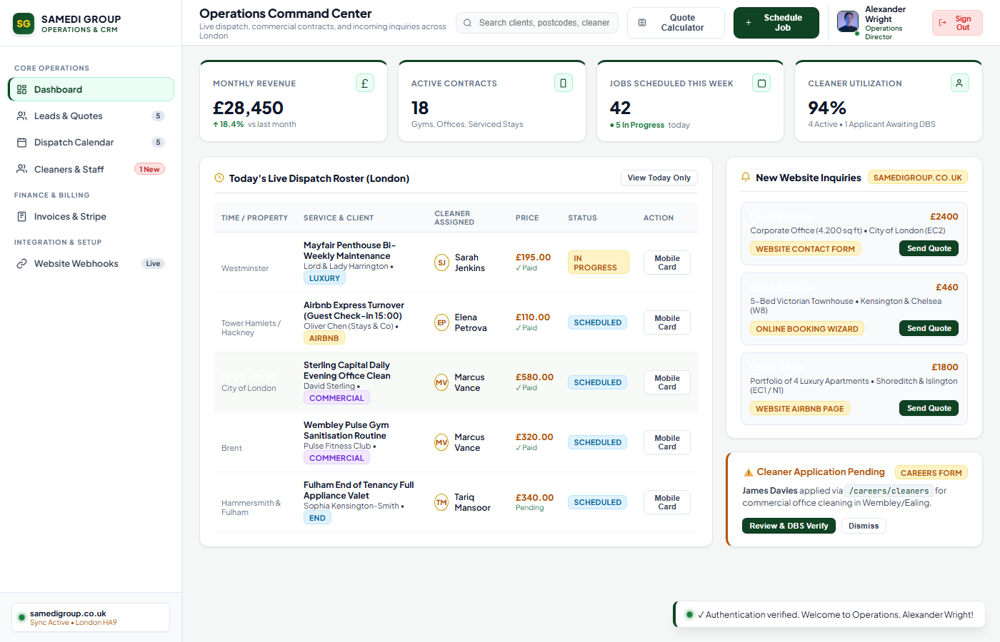
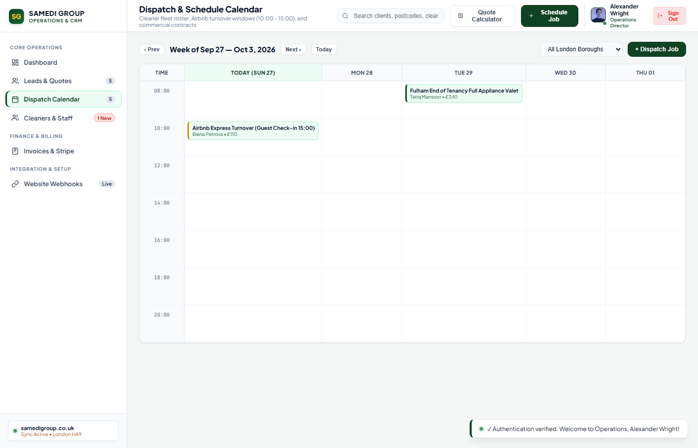

MediCare Hub™ par Jobydoo Agency est un logiciel médical tout-en-un conçu pour les médecins spécialistes, généralistes, dentistes et cliniques privées au Maroc. 100% conforme à la loi marocaine CNDP 09-08 sur la protection des données de santé, il centralise le dossier médical électronique (DME), l'agenda intelligent avec rappels WhatsApp automatiques anti-absentéisme, les ordonnances numériques sécurisées et la facturation CNSS/CNOPS/Mutuelles. Disponible en licence définitive à partir de 14 900 MAD ou en formule Cloud à 690 MAD/mois.
Au Maroc, l'exercice de la médecine libérale fait face à une double pression : une patientèle de plus en plus exigeante quant à la ponctualité des rendez-vous et un cadre réglementaire strict imposé par la CNDP (Commission Nationale de contrôle de la protection des Données à caractère Personnel) sur l'hébergement et la confidentialité des dossiers de santé.
Gérer son cabinet médical sur des registres papier ou de simples feuilles Excel expose le praticien à des pertes irréversibles de dossiers, à des retards chroniques en salle d'attente et à un taux d'absentéisme (No-shows) pouvant atteindre 25% à 35% des consultations prévues.
Développé par Jobydoo Agency en concertation avec des praticiens marocains, MediCare Hub™ est la solution logicielle de référence pour moderniser votre cabinet, fluidifier le travail de votre secrétaire médicale et valoriser l'image de votre pratique.
1. Visite Visuelle : Les Écrans Réels de MediCare Hub™
Contrairement aux logiciels médicaux obsolètes importés d'Europe sans adaptation locale, MediCare Hub™ propose une interface épurée, ultra-rapide et utilisable sans aucune connaissance informatique avancée :


2. Les 5 Fonctionnalités Majeures de MediCare Hub™
Chaque module a été pensé pour répondre aux défis quotidiens des cabinets médicaux à Casablanca, Rabat, Fès, Marrakech et Tanger :
1. Dossier Médical Partagé & Historique Numérique
Accédez en moins de deux secondes à la fiche complète du patient : antécédents personnels et familiaux, allergies, biométrie, examens biologiques, comptes-rendus d'imagerie et historique chronologique de toutes les consultations antérieures.
2. Rappels de Rendez-vous Automatiques par WhatsApp & SMS
Dès qu'un rendez-vous est fixé par votre assistante, le patient reçoit une confirmation instantanée sur son smartphone. Un rappel automatique avec bouton de confirmation ou report est renvoyé 24h avant la consultation, divisant le taux de rendez-vous non honorés par trois.
3. Générateur d'Ordonnances Sécurisées avec QR Code
Éditez vos prescriptions médicales en quelques clics grâce à une base de médicaments actualisée. Chaque ordonnance imprimée comporte vos coordonnées professionnelles, votre cachet numérique et un QR code unique vérifiable par les pharmacies pour lutter contre la falsification.
4. Facturation, Tiers-Payant, CNSS & Mutuelles
Génération instantanée des notes d'honoraires, devis pour actes complexes, gestion des prises en charge mutuelles (CNOPS, CNSS, assurances privées) et suivi de la caisse quotidienne pour votre comptabilité en dirhams marocains.
5. Conformité Rigoureuse CNDP (Loi 09-08)
Chiffrement de bout en bout des données médicales sensibles (AES-256), gestion des droits d'accès différenciés entre le médecin et la secrétaire, traçabilité des consultations et possibilité d'installation sur serveur local au cabinet ou sur Cloud souverain sécurisé.
3. Grille Tarifaire MediCare Hub™ au Maroc (en Dirhams MAD)
Nous proposons des formules flexibles adaptées aux praticiens individuels comme aux grands centres de soins pluridisciplinaires :
| Formule | Tarif Licence Définitive | Formule Cloud (Mensuelle) | Profil Recommandé | Inclusions & Services |
|---|---|---|---|---|
| Cabinet Solo | 14 900 DH (une seule fois) | 690 DH / mois | Médecin spécialiste, généraliste (1 Praticien + 1 Secrétaire) | Dossiers patients illimités, ordonnances types, agenda intelligent, module WhatsApp, formation sur site ou visio de 2h. |
| Centre Médical & Polyclinique | 29 000 DH (une seule fois) | 1 490 DH / mois | Cabinets groupés de 2 à 6 Médecins, centres dentaires | Agendas multi-praticiens synchronisés, gestion des salles d'attente partagées, droits d'accès granulaires, statistiques de rentabilité par praticien. |
| Clinique Privée & Hôpital de Jour | Sur Devis (45 000 – 95 000 DH) | Sur devis | Établissements avec hospitalisation et blocs opératoires | Gestion des lits et chambres, planning du bloc opératoire, pharmacie centrale interne, interfaçage avec les équipements de radiologie (PACS / DICOM). |
🩺 Vous Souhaitez Voir MediCare Hub™ en Action ?
Bénéficiez d'une démonstration guidée personnalisée en visioconférence ou directement dans votre cabinet à Casablanca ou Rabat : Découvrir la solution détaillée → ou contactez notre équipe médicale sur WhatsApp au +212 645 833 671.
4. Migration Facile de Vos Données Existantes
Vous utilisez actuellement un ancien logiciel médical ou un ensemble de classeurs Excel ? Les ingénieurs de Jobydoo Agency prennent en charge l'extraction, le nettoyage et la migration intégrale de l'historique de vos dossiers patients vers MediCare Hub™, sans aucune perte de données ni interruption d'activité de votre cabinet.
5. Solutions Dédiées pour les Autres Professions de Santé
En complément de MediCare Hub™, Jobydoo Agency a développé des déclinaisons métiers spécialisées :
- Logiciel Cabinet Dentaire (DentaSuite™ Pro) : Odontogramme 3D interactif, gestion des prothèses, plans de traitement orthodontiques et suivi des devis.
- Toutes nos Solutions Métiers Digitales : Outils sur-mesure pour professionnels libéraux et entreprises au Maroc.
Discutons de Votre Projet et Obtenez un Devis Transparent
Bénéficiez d'un cadrage technique gratuit, d'une estimation budgétaire détaillée en Dirhams (MAD) et d'une démonstration personnalisée sans aucun engagement.
Foire Aux Questions (FAQ)
❓ Le logiciel MediCare Hub™ est-il conforme à la loi marocaine CNDP 09-08 ?
Oui, rigoureusement. MediCare Hub™ a été conçu dans le respect strict des préconisations de la CNDP concernant la protection des données de santé à caractère personnel. Les données sont chiffrées selon la norme AES-256, avec des protocoles stricts de traçabilité des accès et des sauvegardes quotidiennes automatisées.
❓ Peut-on récupérer les dossiers patients depuis notre ancien logiciel ou fichier Excel ?
Absolument. Nos équipes techniques effectuent une prestation de migration clé en main de votre base patient existante (noms, téléphones, antécédents, historique) pour vous permettre d'utiliser MediCare Hub™ dès le premier jour sans ressaisie manuelle.
❓ Comment fonctionne l'envoi des rappels de rendez-vous par WhatsApp ?
Le logiciel se connecte de manière transparente à l'API officielle WhatsApp Business. Lors de la prise de rendez-vous ou la veille de la consultation, le patient reçoit un message officiel personnalisé avec l'heure, l'adresse de votre cabinet et un lien pour confirmer ou signaler un empêchement.
❓ Faut-il payer un abonnement mensuel obligatoire ?
Non. Nous proposons deux options d'acquisition : une licence définitive (achat unique sans redevance mensuelle) avec hébergement local sur votre serveur de cabinet, ou une formule Cloud SaaS mensuelle avec maintenance et hébergement sécurisé inclus.
❓ Combien de temps prend la formation de la secrétaire médicale ?
L'interface de MediCare Hub™ a été spécialement pensée pour être ultra-intuitive. En moyenne, une session de formation de 2 heures suffit pour que votre assistante maîtrise parfaitement la prise de rendez-vous, la recherche de dossiers et l'édition des ordonnances et factures.